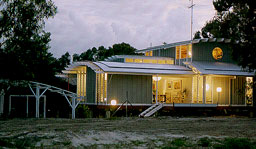
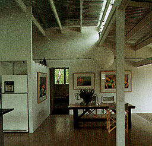
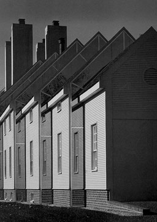
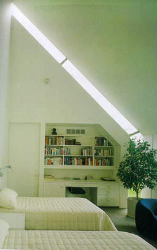

A House in Noosaville, Australia
Gabriel Poole

Country Houses
Telleri |
Gabriel Poole built this house and office for
himself. The main materials that were used are white metal for
the structure, grey wood for the walls and glass, all very industrial
so the structure of the house is easy to be recognise. The house
is designed to function in a hot climate with sometimes sub-tropical
rains. The skin of the building is dynamic in many ways. Air
flow, light and sight can be regulated. The different heights
of the sloping ceilings causes opening for glass strips. These
openings create a variety of shadows and overall clarity. This
can be seen on the photograph on the right. |
 |
Private residence, Lancaster Country, Pennsylvania, 1980
Hugh Newell Jacobsen

GA Houses 17
A.D.A. EDITA Tokyo |
The front of the designed house is traditional.
The other three sides have a more futuristic look. Each unit
in the house has its own function. Windows are placed from the
floor to the roof by each unit to provide for enough daylight.
This can be seen on the left picture. Reflective glass was used
to ensure enough privacy. On the right photograph the interior
of a bedroom under the roof can be seen. The walls and roof are
white so the room gives a very diffuse and light impression. |
 |